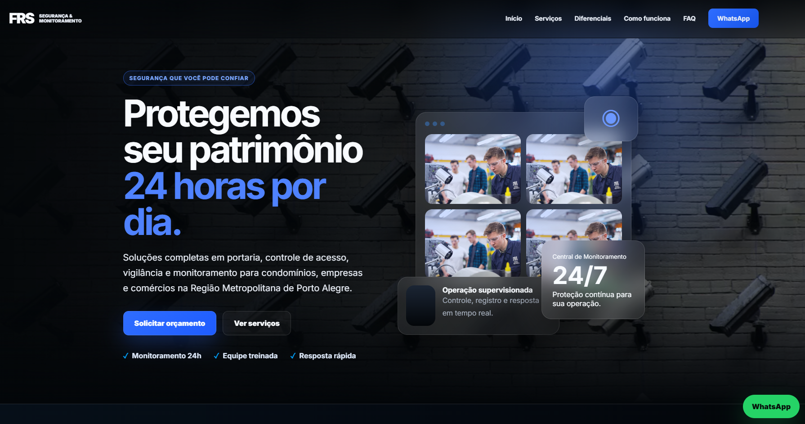
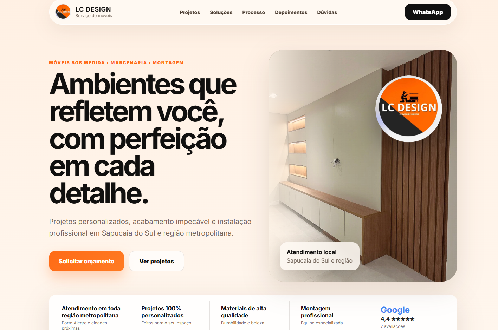
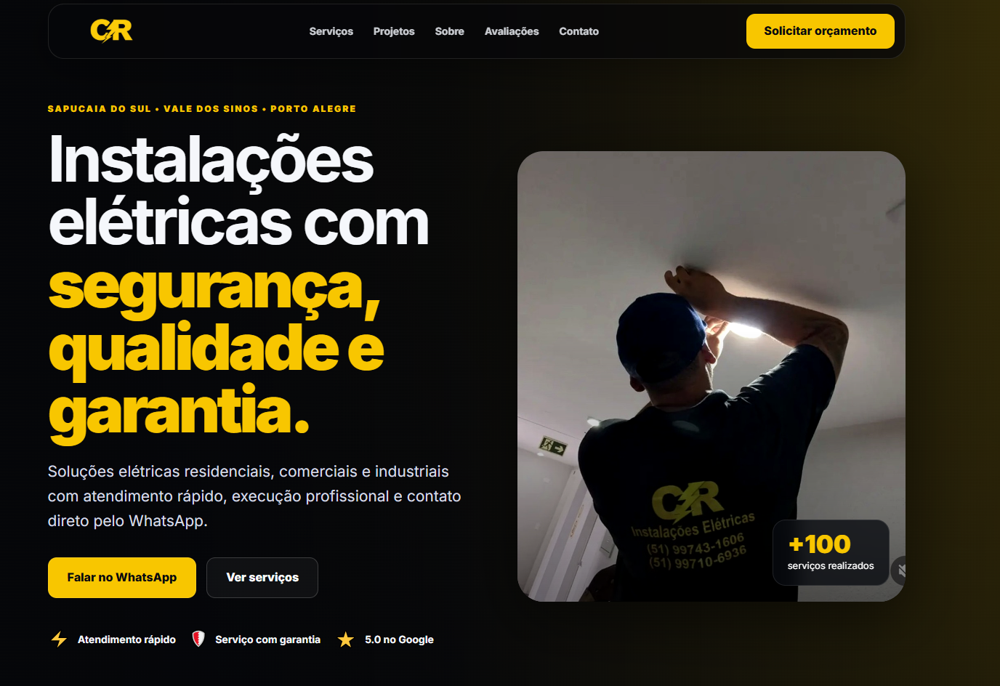
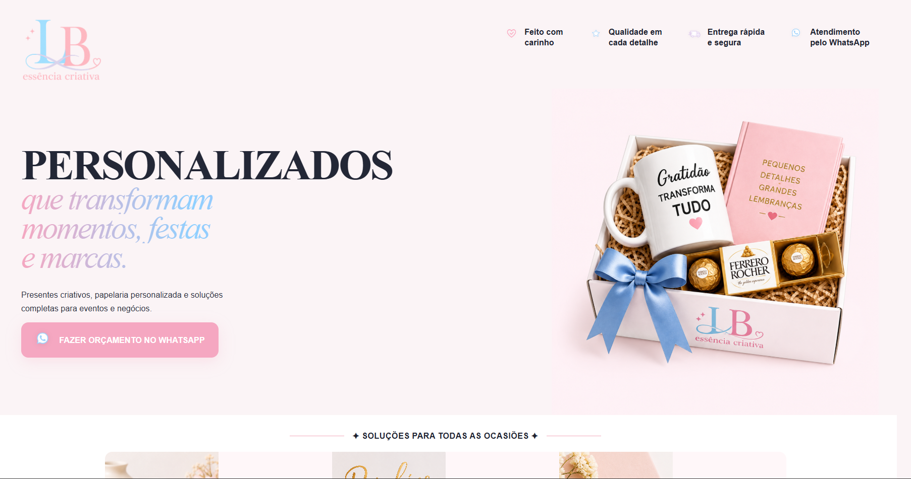

NextLead • páginas que convertem
Landing pages que transformam visitantes em clientes.
Criamos páginas modernas, rápidas e estratégicas para prestadores de serviço que querem gerar mais orçamentos, transmitir confiança e vender pelo WhatsApp.
Design premiumCTA para WhatsAppResponsivo



Portfólio
Projetos feitos para negócios reais parecerem mais fortes no digital.
Cada landing tem uma direção visual própria, pensada para o nicho, público e tipo de confiança que o cliente precisa transmitir.
Segurança patrimonial
FRS Segurança
Visual escuro, tecnológico e corporativo para comunicar proteção, controle de acesso, vigilância e atendimento 24h.
Abrir projeto
Móveis planejados
LC Design Serviço de Móveis
Página com estética premium e visual acolhedor para valorizar cozinhas, dormitórios, painéis e ambientes sob medida.
Abrir projeto
Instalações elétricas
CR Instalações Elétricas
Design direto e de alto contraste para passar segurança técnica, agilidade e confiança no orçamento pelo WhatsApp.
Abrir projeto
Presentes e personalizados
LB Essência Criativa
Landing delicada e comercial para apresentar produtos personalizados, reforçar autoridade e facilitar pedidos.
Abrir projetoO que a NextLead entrega
Mais que uma página bonita: uma estrutura para gerar contatos.
Landing Page
Layout exclusivo, copy objetiva, seções de confiança e CTA para WhatsApp.
Responsivo
Visual ajustado para celular, sem texto gigante ou layout quebrado.
Publicação
Entrega em HTML, CSS e JS, pronta para subir no GitHub/Vercel.
SEO básico
Estrutura com título, descrição, performance e base para Google Search Console.
Processo
Da ideia ao link publicado.
1Briefing e referências
2Direção visual
3Copy e seções
4HTML, CSS e JS
5Publicação e ajustes
Identidade
NextLead nasce para posicionar seu serviço como uma escolha profissional.
Estratégia, design e conversão em uma apresentação clara: o visitante entende o valor, confia no serviço e tem um caminho simples para pedir orçamento.
Vamos transformar seu serviço em uma página que vende